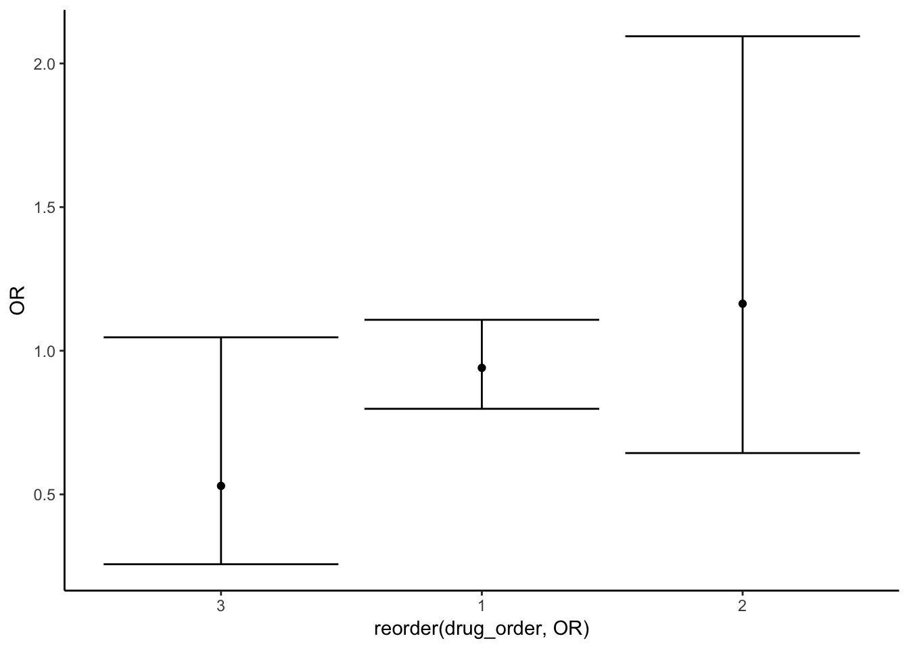
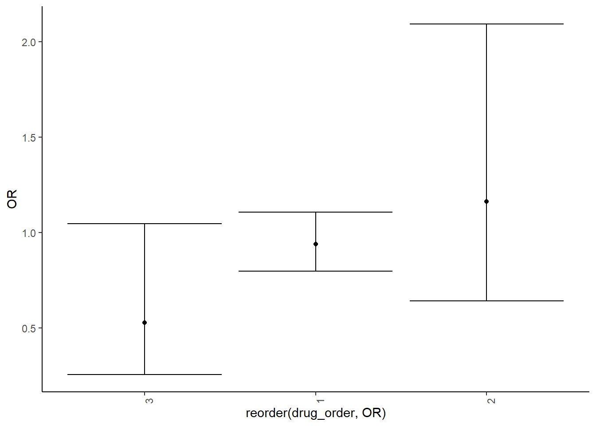
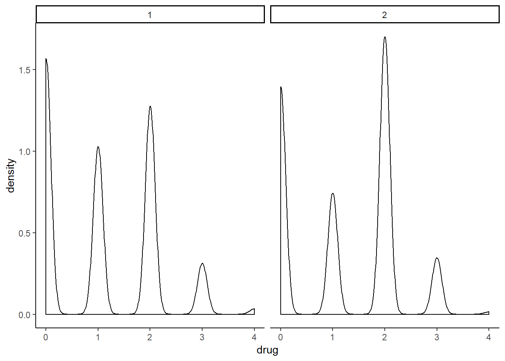

df_combine = dm_base %>%
rename(
subject_id = JiBenCID,
glu_average = fastglu,
weight_initial = tizhong_1st,
weight_average = tizhong,
height = ShenGao,
glu_initial = kfxt_1st,
gender = xingbie,
district = GuanLiQX,
sys_pressure = Sbp,
dia_pressure = Dbp,
exercise_time = xiuxiansj,
exercise = xiuxiantl,
drug_insulin = insulin,
drug_oral_sulfo = sulfonylurea,
drug_oral_biguanide = biguanide,
drug_oral_glu = glu_inhib,
retina = reti,
skin = derm,
vessel = vesl,
nerve = neur,
kidney = neph,
depression = depress,
dmtime = quezhensj,
birthyear = birth_year,
birthmon = birth_mon,
dmdatayear = rucu_year,
dmdatamon = rucu_mon,
dmdataage = rucuage,
drug_order = fuyaoqk) %>%
mutate(
bmi_initial = weight_initial/(height/100)^2,
bmi_average = weight_average/(height/100)^2,
bmi_change = bmi_average - bmi_initial,
glu_change = glu_average - glu_initial,
tb = ifelse(censer == 1, "No", "Yes"),
exercise = as.factor(exercise),
drug_oral_name = case_when(drug_oral_sulfo == "1" & drug_oral_biguanide == "0" & drug_oral_glu == "0" ~"sulfonylurea",
drug_oral_biguanide == "1" & drug_oral_sulfo == "0" & drug_oral_glu == "0" ~ "biguanide",
drug_oral_glu == "1" & drug_oral_biguanide == "0" & drug_oral_sulfo == "0" ~ "glu_inhib",
drug_oral_sulfo == "1" & drug_oral_biguanide == "1" & drug_oral_glu == "0" ~"sulfonylurea&biguanide",
drug_oral_biguanide == "1" & drug_oral_sulfo == "0" & drug_oral_glu == "1" ~ "biguanide&glu_inhib",
drug_oral_sulfo == "1" & drug_oral_biguanide == "0" & drug_oral_glu == "1" ~"sulfonylurea&glu_inhib",
drug_oral_sulfo == "1" & drug_oral_biguanide == "1" & drug_oral_glu == "1" ~"sulfonylurea&glu_inhib&biguanide",
TRUE ~ "NA"),
drug = drug_oral_biguanide + drug_oral_biguanide + drug_oral_glu + drug_insulin,
retina = as.numeric(retina),
skin = as.numeric(skin),
vessel = as.numeric(vessel),
nerve = as.numeric(nerve),
kidney = as.numeric(kidney),
complications = retina + skin + vessel + nerve + kidney + depression,
complications = as.factor(complications),
drug_order = as.factor(drug_order)
)
levels(df_combine$complications) <- list(none=0,one=1,more_than_two=c(2,6))
levels(df_combine$exercise) <- list('1' = 1, '2' = 2, '3' = c(3,4))df_drug = df_combine %>%
select(contains("drug"),censer,urban_rural)
drug_model = df_drug %>%
group_by(drug_order) %>%
nest() %>%
mutate(models = map(data, ~glm(censer ~ drug, data = .x, family = binomial())),
ci = map(models,confint),
ci = map(ci,broom::tidy),
models = map(models, broom::tidy)) %>%
select(-data) %>%
unnest() %>%
mutate(low_bond = exp(X2.5..),
high_bond = exp(X97.5..),
OR = exp(estimate)) %>%
select(drug_order,term,estimate,low_bond,high_bond,OR)## Waiting for profiling to be done...
## Waiting for profiling to be done...
## Waiting for profiling to be done...## Warning: 'tidy.matrix' is deprecated.
## See help("Deprecated")
## Warning: 'tidy.matrix' is deprecated.
## See help("Deprecated")
## Warning: 'tidy.matrix' is deprecated.
## See help("Deprecated")drug_model %>%
filter((term %in% c("drug"))) %>%
ggplot()+
geom_point(aes(reorder(drug_order,OR), y = OR))+
geom_errorbar(aes(x=drug_order, ymin = low_bond, ymax = high_bond))+
theme(axis.text.x = element_text(angle = 90, hjust = 1))
pie_1 <- ggplot(df_drug, aes(x = factor(1), fill = factor(drug_order))) + geom_bar(width = 1)+coord_polar(theta = "y")
pie_2 <- df_drug %>%
ggplot(aes(x = factor(1), fill = factor(drug_oral_name))) + geom_bar(width = 1)+coord_polar(theta = "y")
pie_3 <- df_drug %>%
filter(drug_insulin ==1) %>%
ggplot(aes(x = factor(1), fill = factor(censer))) + geom_bar(width = 1)+coord_polar(theta = "y")
drug_model_complex = df_drug %>%
group_by(drug_order) %>%
nest() %>%
mutate(models = map(data, ~glm(censer ~ drug_insulin + drug_oral_sulfo + drug_oral_biguanide + drug_oral_glu, data = .x, family = binomial())),
ci = map(models,confint),
ci = map(ci,broom::tidy),
models = map(models, broom::tidy)) %>%
select(-data) %>%
unnest() %>%
mutate(low_bond = exp(X2.5..),
high_bond = exp(X97.5..),
OR = exp(estimate)) %>%
select(drug_order,term,estimate,low_bond,high_bond,OR)## Waiting for profiling to be done...
## Waiting for profiling to be done...
## Waiting for profiling to be done...## Warning: 'tidy.matrix' is deprecated.
## See help("Deprecated")
## Warning: 'tidy.matrix' is deprecated.
## See help("Deprecated")
## Warning: 'tidy.matrix' is deprecated.
## See help("Deprecated")drug_model_complex %>%
filter((term %in% c("drug_oral_sulfo"))) %>%
ggplot()+
geom_point(aes(reorder(drug_order,OR), y = OR))+
geom_errorbar(aes(x=drug_order, ymin = low_bond, ymax = high_bond))+
theme(axis.text.x = element_text(angle = 90, hjust = 1))
df_drug %>%
ggplot(aes(x = drug))+geom_density()+
facet_grid(~factor(urban_rural)) +
viridis::scale_fill_viridis(discrete = TRUE)